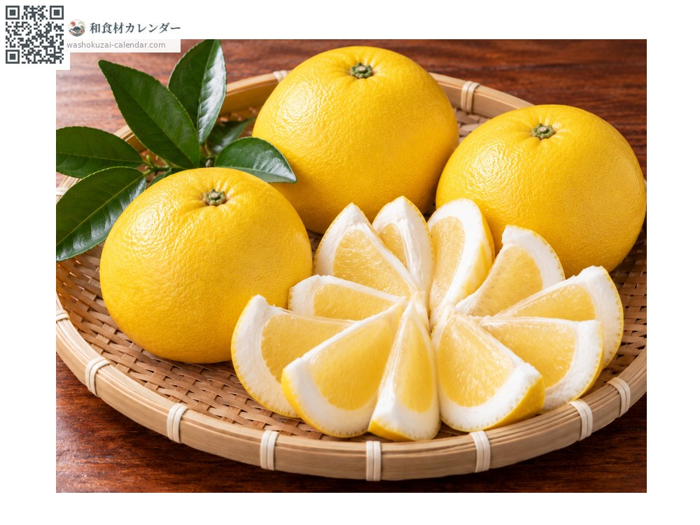
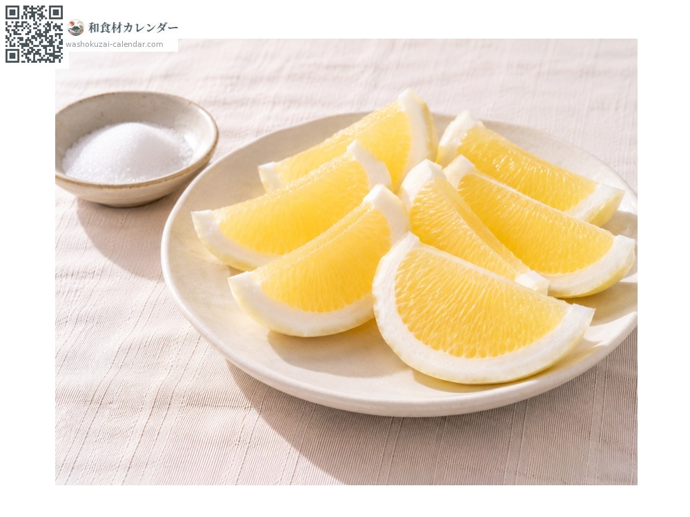
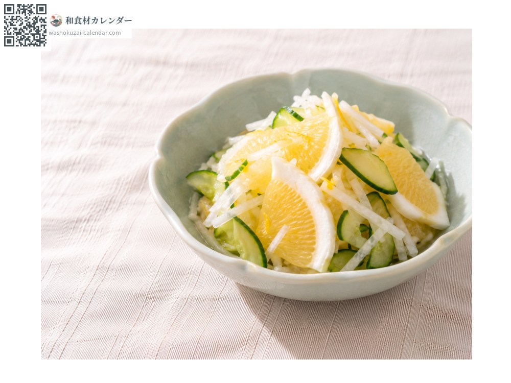
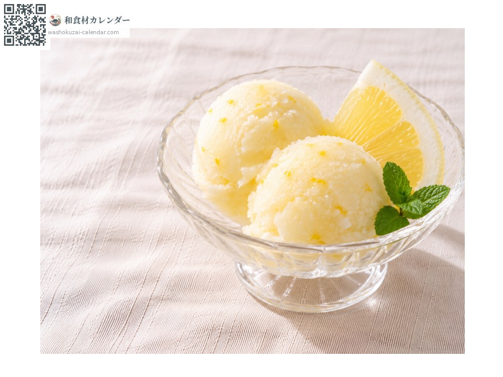
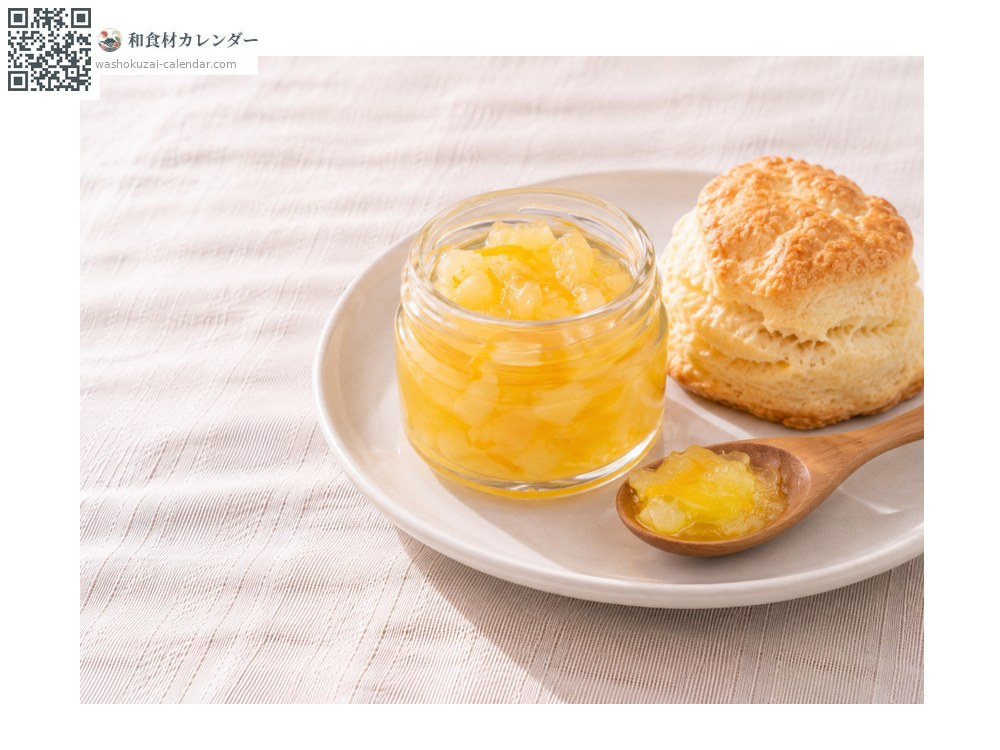

果物
日向夏
ひゅうがなつ
別名・別表記小夏、柑橘、ニューサマーオレンジ、hyuganatsu、hyuuganatsu、nyusamaaorenji、nyuusamaaorenji
旬は4月・5月

旬の時期
1月
2月
3月
4月
5月
6月
7月
8月
9月
10月
11月
12月
旬出回り
調理法

ワタごと薄切り
黄色い表皮だけをむき、白いワタを残して切る。砂糖や醤油を少しつける。

酢の物
大根やきゅうりと甘酢で和える。

シャーベット
果汁を凍らせる。さわやかな香りが残る。

ジャム
ワタも刻んで一緒に煮る。
選び方
皮が明るい黄色でつやがあり、持つと重いもの。
保存方法
乾燥しないよう袋に入れて冷蔵庫の野菜室へ。
主な産地
豆知識
江戸時代の1820年ごろ、宮崎の民家の庭で偶然見つかった。高知では小夏、愛媛ではニューサマーオレンジとも呼ばれる。白いワタに苦味がなくやわらかな甘みがあり、果肉と一緒に食べるのが特徴。